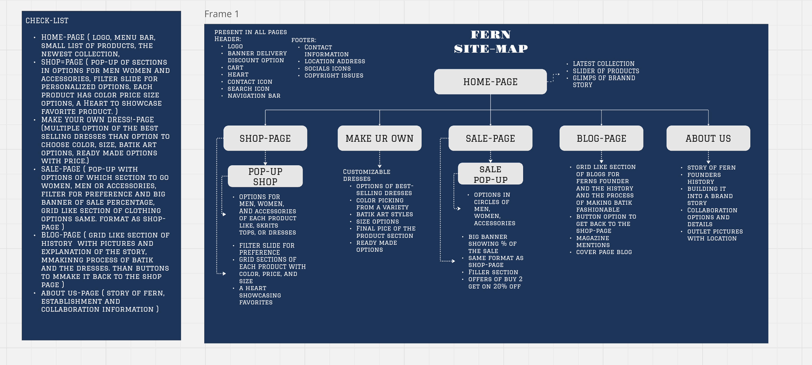
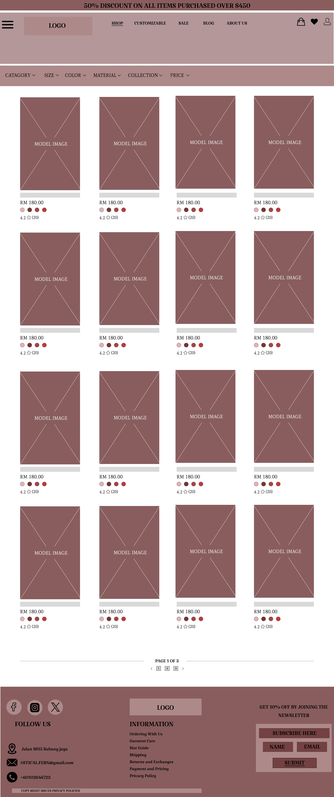
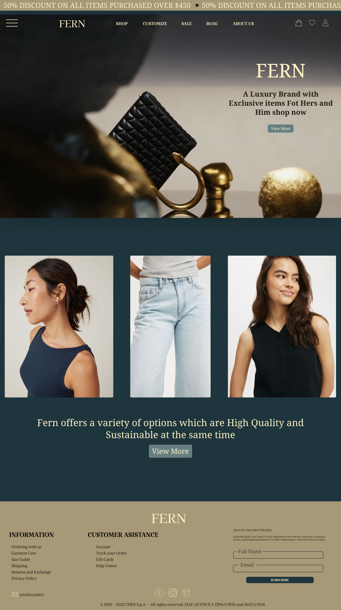
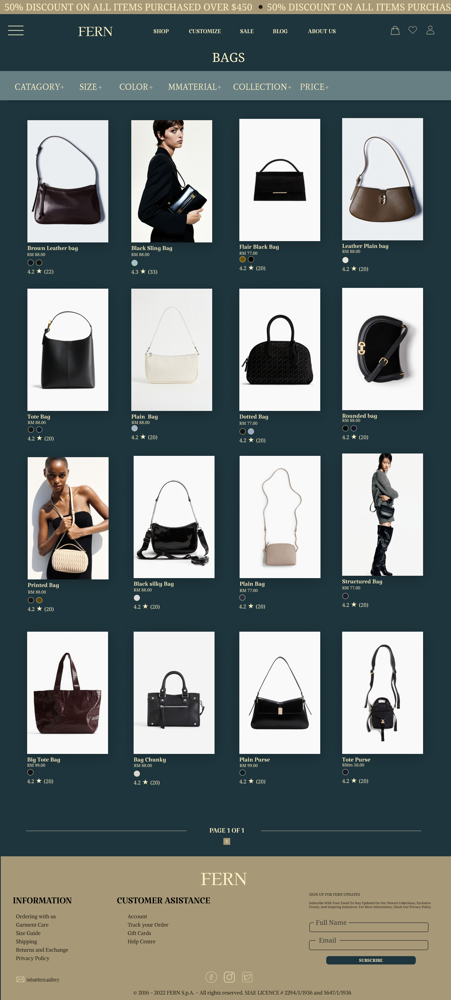
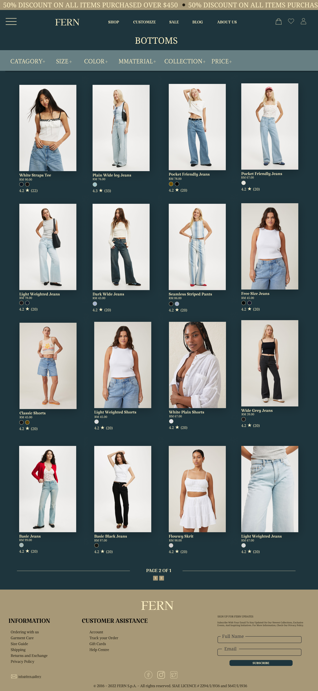
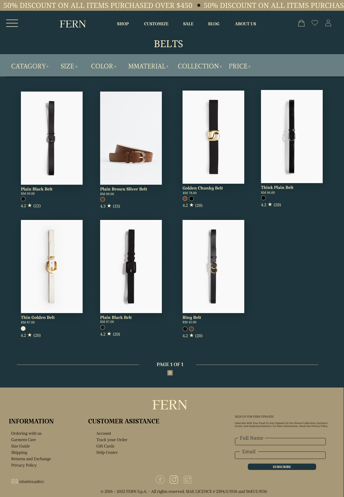
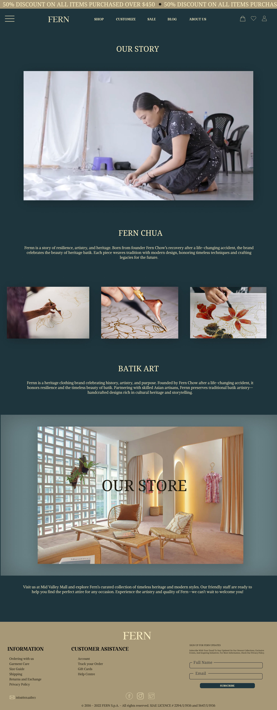
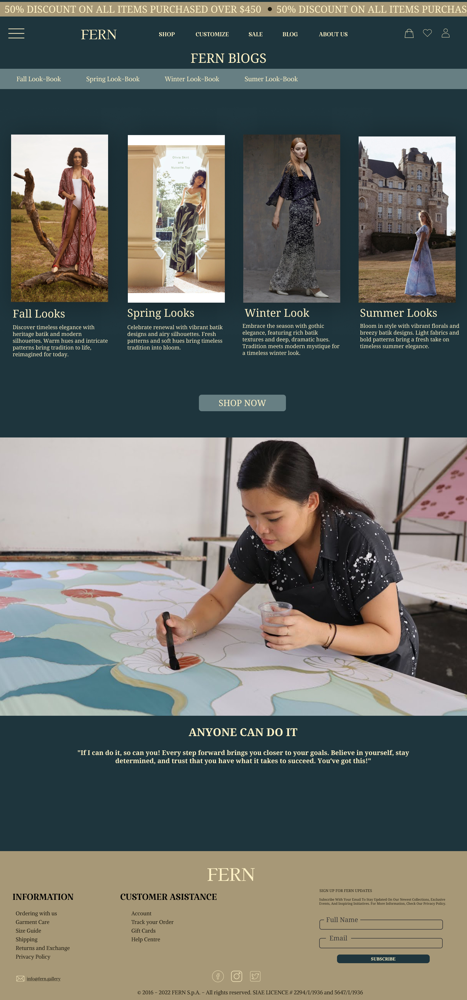
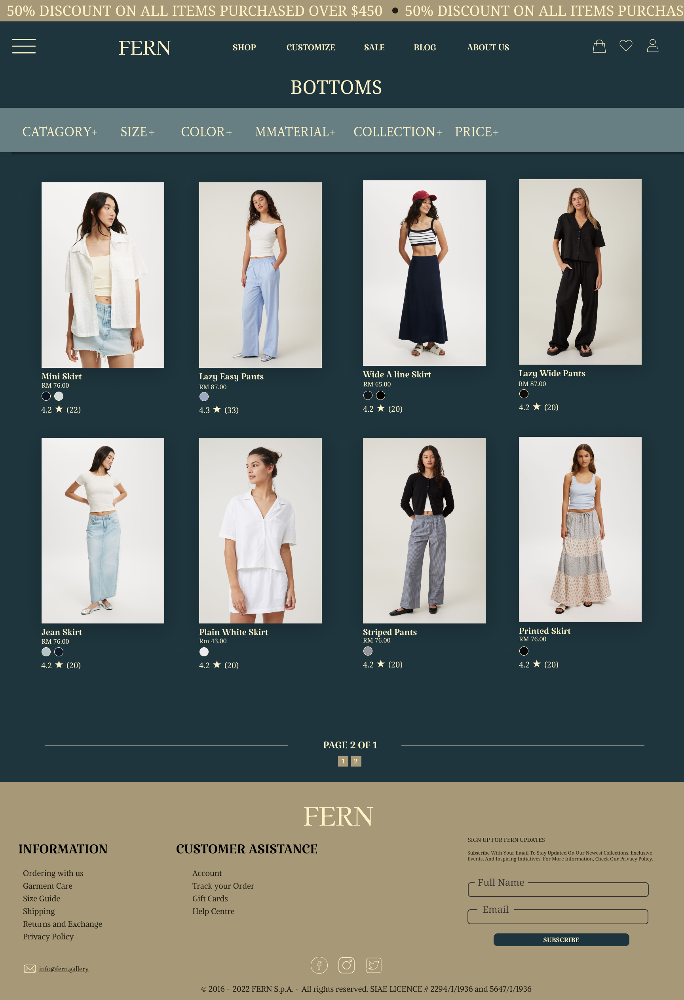
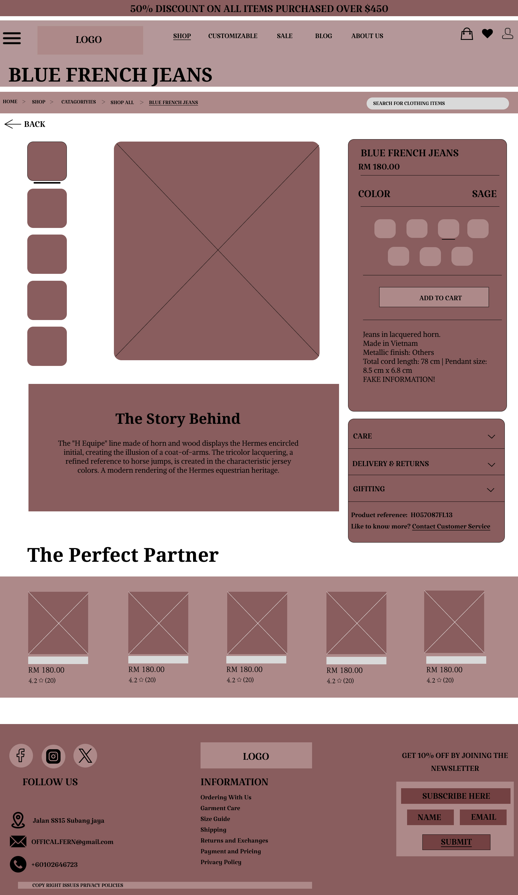

Fern
A batik label's storefront, rebuilt with its owner in the room.
This was a real redesign, not a mockup. Fern already had a live storefront and a founder with a clear story — hand-made batik, modernised, sold to a Malaysian and regional audience. I approached the owner directly, sat down for a proper discussion about what the existing site was costing her, and rebuilt it from the information architecture up.
The conversation with the owner
I approached the owner rather than guessing at a brief, and we talked through the business the way a client conversation should go — what sells, who buys, and where the existing site was working against her. What follows is my own summary of what came out of it, and what I changed as a result.
Structure before surface
Every page was specified in writing before anything was drawn: what lives in the header on all pages, what each template owes the shopper, where the founder's story sits so it is never buried. Then grey wireframes tested the product card, the filter rail and pagination before colour or photography could flatter a weak layout.


The homepage, in full
The whole scroll, uncropped. A collection hero that treats the garment like editorial, a sustainability line the owner is asked about constantly, a product rail with prices in ringgit, then the founder's story given real estate instead of a footer link.
One system, every page
Deep teal, sand and cream; one serif display voice; one product card that survives bags, belts, bottoms, blog and sale without redrawing. Each page below is shown complete, at full length.







